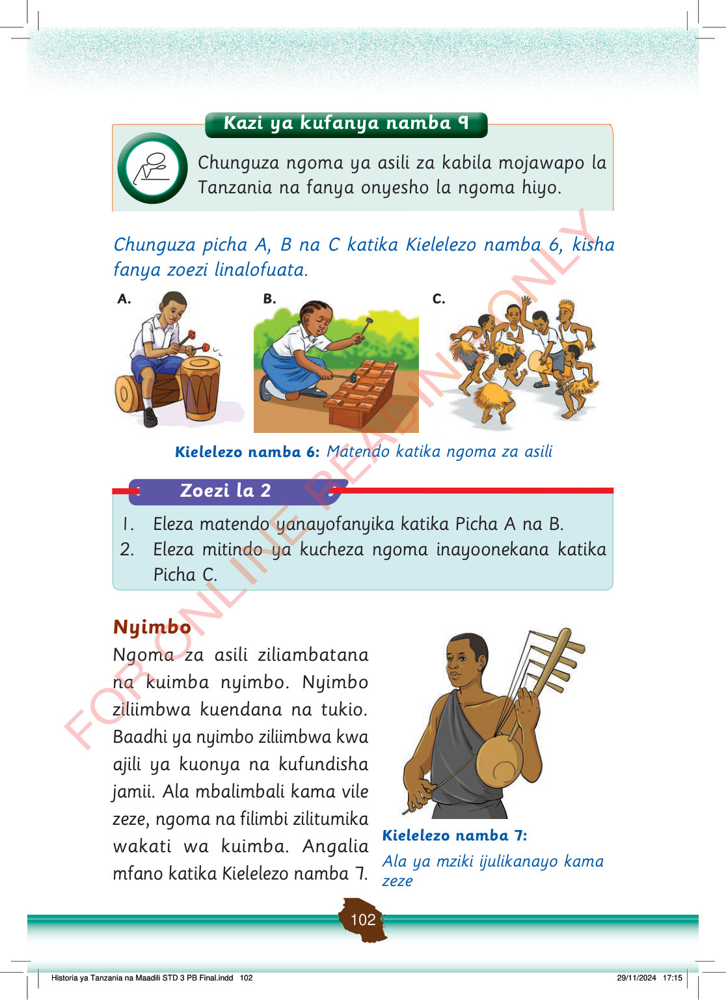

Kazi ya kufanya namba 9
Chunguza ngoma ya asili za kabila mojawapo la Tanzania na fanya onyesho la ngoma hiyo.
Chunguza picha A, B na C katika Kielelezo namba 6, kisha fanya zoezi linalofuata.
A.
Mtoto amekaa akipiga ngoma kwa vijiti. Anafanya onyesho la ngoma ya asili.
B.
Mtoto anapiga zeze la mbao kwa vijiti. Anacheza muziki wa asili akiwa amepiga magoti chini.
C.
Watoto wanacheza ngoma ya asili pamoja. Wamevaa mavazi ya nyasi na wanacheza kwa furaha.
Kielelezo namba 6: Matendo katika ngoma za asili
Zoezi la 2
1. Eleza matendo yanayofanyika katika Picha A na B.
2. Eleza mitindo ya kucheza ngoma inayoonekana katika Picha C.
Nyimbo
Ngoma za asili ziliambatana na kuimba nyimbo.
Nyimbo ziliimbwa kuendana na tukio.
Baadhi ya nyimbo ziliimbwa kwa ajili ya kuonya na kufundisha jamii.
Ala mbalimbali kama vile zeze, ngoma na filimbi zilitumika wakati wa kuimba.
Angalia mfano katika Kielelezo namba 7.
Mtu anapiga ala ya muziki iitwayo zeze. Anaishika kwa mkono mmoja na kupiga kwa upinde.
Kielelezo namba 7:
Ala ya mziki ijulikanayo kama zeze
Historia ya Tanzania na Maadili STD 3 PB Final.indd 102
29/11/2024 17:15